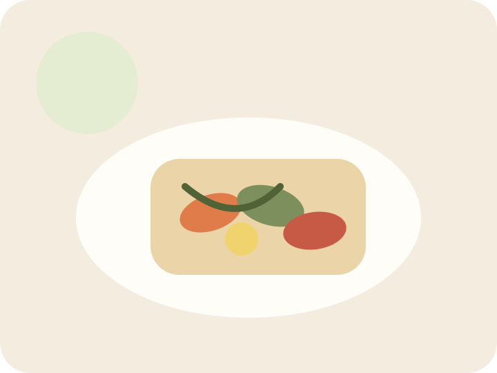
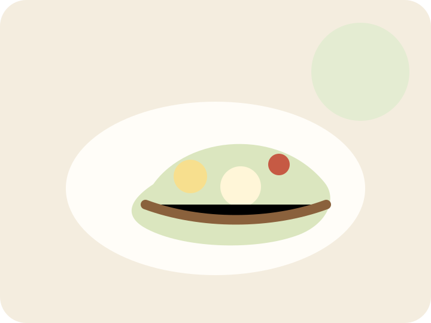

Aftensmad
Klassisk bolognese
En nem hverdagsret med klare trin og ingredienser.
Aftensmadssiden bruger bolognese som et genkendeligt og visuelt varmt eksempel.
En nem hverdagsret med klare trin og ingredienser.

Farverig aftensmad med urter og dressing.

Lettere alternativ til en varm aftensmad.